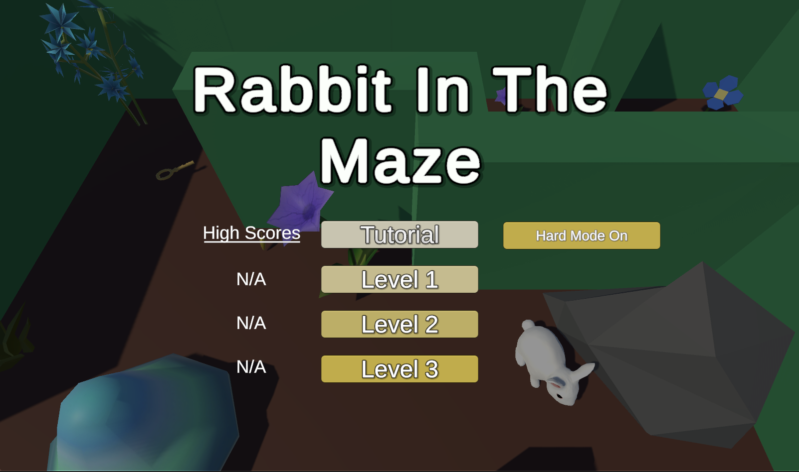
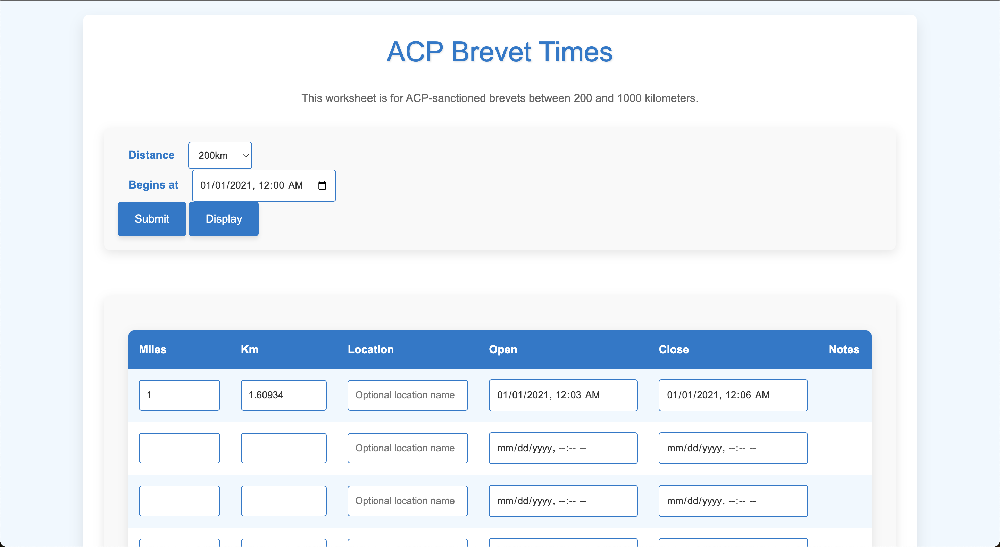

About Me
I'm a senior-level computer science student studying at the University of Oregon who is passionate about helping others. I found my love for computer science in high school and have been working towards my goals since then. Another passion of mine is understanding businesses and their models as evidenced by my minor in business administration. I also love dogs, boardgames, and those around me.
Projects
-
Rabbit In The Maze
A Unity game developed collaboratively, where the player controls a rabbit trying to escape randomly generated mazes of increasing difficulty by finding the key to the exit.
-
Anagram Web Game

A small vocabulary anagram game to challenge and improve word skills. The user must correctly determine which three of the above words can be composed via the jumble given.
-
ACP Controle Time Brevets
A web application that follows ACP regulations for easier understanding of creating brevets in bike races.
Skills
- Programming Languages: C, C++, C#, Python, SQL
- Web Technologies: HTML, CSS, JavaScript, JQuery
- Skills: Docker, Flask, MongoDB, Version Control
Contact
Email: ellies2021@gmail.com
LinkedIn: www.linkedin.com/in/ellisonschillinglargent
GitHub: https://github.com/Ellison-Schilling